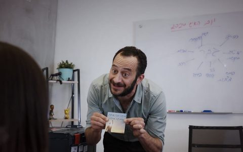
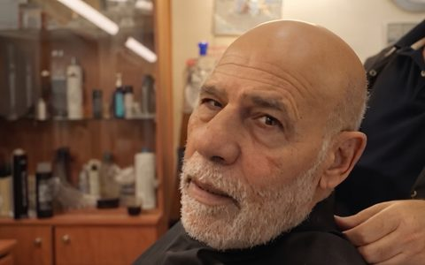
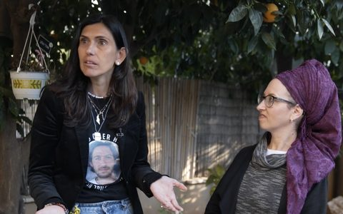
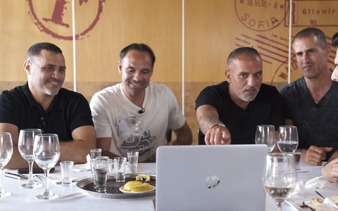
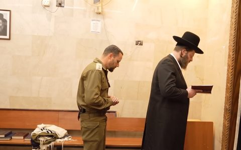
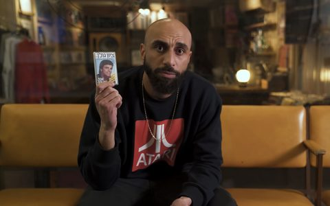

תיק עבודות
לחצו על הפריים לפרטים וצפייה

אינסטגרם חסמו את רותם

הכומר היהודי
עוקץ נפרדים מטייגה

מה הסיפור של אליעזר בן יהודה?

לנצח צהוב שחור: פרויקט הנצחה מיוחד

יום האיש
אל תתרבו בנובמבר

אורי גבריאל מציג: הכוורת
מונדיאל 2026 ישודר כאן!

תרגיל בחיבור: שתי אמהות חטופים נפגשות לשיחה

סיפורה של סוליקה הצדקת

בית אחד בח׳אן יונס

20 שנה ל-5:0 על אוסטריה

תרגיל בחיבור: חרדי ומילואימניק
כאן אורייתא: יום הזיכרון הוא ראש השנה

למורן אטיאס נמאס מהצביעות של ארגוני הנשים אחרי ה-7.10

חנה אזולאי הספרי פונה לעם המרוקאי. במרוקאית

מסיבת פרידה מ-2023: השנאחסית
מחשבות: מסאז׳ בזמן מלחמה

משכתבים את עשר המכות

האינטרוונשן

איך השפיעו היפנים על המוזיקה המזרחית בישראל?

מה הסיפור של באג 2000?
מי מפחד מהמפלצת הירושלמית?
למה אנחנו עושים ק*י רק בבית?
חדש: קומדי BOX!
לך תזכור, הסכת על השואה מהרגע שהסתיימה
חברת מוריה: סיכום פעילות שנת 2025
25 שנה אחרי, חיים צינוביץ׳ חוזר לשרוף
בחזרה לנובה
עכשיו אתה מדבר
קצת עליי.

אני אורי, נשוי לקרן ואבא לאלה. אני נמצא במסע מתמיד אחר הסיפור, והתשוקה שלי היא לספר אותו.
אני במאי, כותב ומגיש עם ניסיון של למעלה מ-8 שנים, רובן בכאן דיגיטל, והיכרות עמוקה עם כל המרחב הקריאייטיבי. אני מביא גישה רכה לדוקו, ארגון והנגשת ידע באקספליינר ופיצוח מרובד למערכון קומי. אני מכיר דיגיטל.
אני חושב שאני יכול להגשים את החלום שלך.
שאלות שכבר עניתי עליהן
אז מה בדיוק אתה עושה?
אני במאי, אבל בנוסף עושה גם תסריט, הגשה, הפקה ותחקיר ואסטרטגיית תוכן. לפעמים את כולם בפרוייקט אחד ולפעמים רק את מה שחסר לכם. עושה דוקו, אקספליינרים, מערכונים מתוסרטים וגם פודקאסטים.
צריך להגיע עם בריף מסודר?
לא חייב. מספיק רעיון, בעיה או תחושה, ומשם נבנה את זה ביחד. אם כבר יש בריף, מעולה.
תרצה להניח?
בטח!